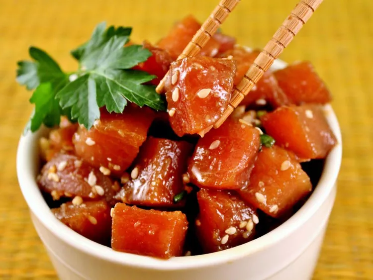

Homepage
Ahi Poke

This easy poke recipe is a refreshing Hawaiian salad of fresh ahi tuna steak cubes tossed with soy sauce, sesame oil, and green onions for a dish full of umami flavor.
Ingredients
- Ahi Tuna - Because you eat it raw, be sure to buy sashimi-grade tuna.
- Soy Sauce - Soy sauce provides umami-rich flavors.
- Sesame Oil - Sesame oil lends a nutty flavor to the marinade.
- Green Onions - Green onions add clior and a hint of flavor.
- Toasted Sesame Seeds - Toasted sesame seeds will add a crunch to the poke as well as a light nutty flavor.
Steps
- Simply combine all the ingredients in a bowl and allow it to marinate in the fridge for at least two hours. Serve as desired.
Homepage